第 3 讲：变换（一）——2D 变换与齐次坐标
用矩阵统一描述缩放、旋转、切变与平移，并理解为什么需要齐次坐标。
◆ 学完这一讲，你应该能
能写出 2D 缩放、旋转、切变、平移的变换矩阵，并说明各元素含义
理解齐次坐标如何把平移变成矩阵乘法，能区分点与向量的 w 分量
能通过矩阵乘法组合多个变换，并解释变换顺序为什么重要
能推导绕任意点旋转的矩阵表达 T(c)·R(α)·T(-c)
了解 3D 仿射变换的 4×4 矩阵形式及其与 2D 的对应关系
核心结论速记
变换分为建模变换（对物体做平移/旋转/缩放）和视图变换（3D 到 2D 投影），是图形学最基础的工具。
2D 线性变换（缩放、旋转、切变、反射）都可以写成 2×2 矩阵乘法 x' = M x。
平移不是线性变换，无法用 2×2 矩阵表示；引入齐次坐标（增加 w 分量）后，所有仿射变换都能统一成 3×3 矩阵乘法。
齐次坐标中，2D 点写作 (x, y, 1)^T，2D 向量写作 (x, y, 0)^T；点+点得到 w=2 需除以 w 才回到点。
多个变换按顺序相乘可合并为一个矩阵，矩阵从右向左作用于向量；顺序不同结果不同（矩阵乘法不交换）。
绕任意点 c 旋转 = 平移到原点 → 旋转 → 平移回去，即 T(c)·R(α)·T(-c)。
3D 仿射变换用 4×4 矩阵表示，点 (x,y,z,1)，向量 (x,y,z,0)，一般 (x,y,z,w) 表示点 (x/w, y/w, z/w)。
011. 为什么需要变换：建模与观察
图形学里我们几乎无时无刻不在做变换。课件把动机分成两类：
- 建模（Modeling）：场景里的物体需要被摆放、旋转、缩放。比如一个椅子模型，你可能先缩放成不同尺寸，再旋转朝向，最后平移到房间的某个位置。课件用平移、旋转、缩放三张图说明：同一个物体通过变换可以产生丰富的变化。
- 观察（Viewing）：我们生活在 3D 世界，但屏幕是 2D 的。把 3D 场景投影到 2D 图像，本质上也是一种变换（投影变换）。课件用「3D to 2D projection」的图来示意。
除此之外，变换还贯穿动画（骨骼动画本质是矩阵变换）、纹理映射、光照计算等。可以说，变换是图形学的「动词」：没有变换，场景里只有一堆静止的、位于原点的模型。
这一讲先聚焦 2D 变换，因为 2D 的直觉最直接，而 3D 只是多一维，矩阵形式完全类似。
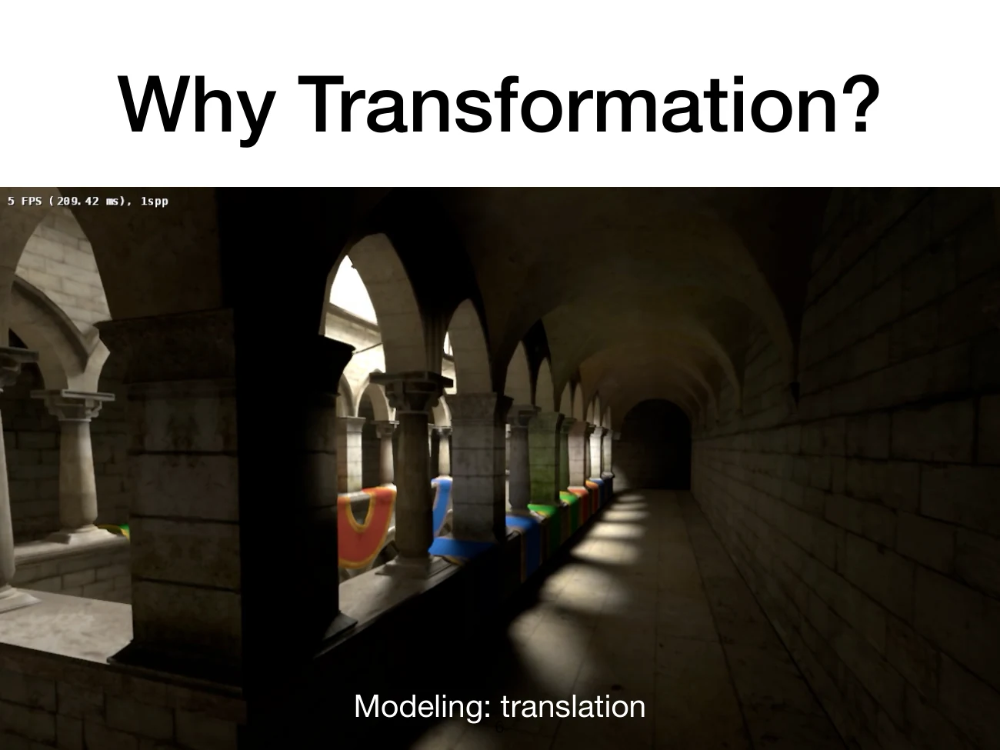
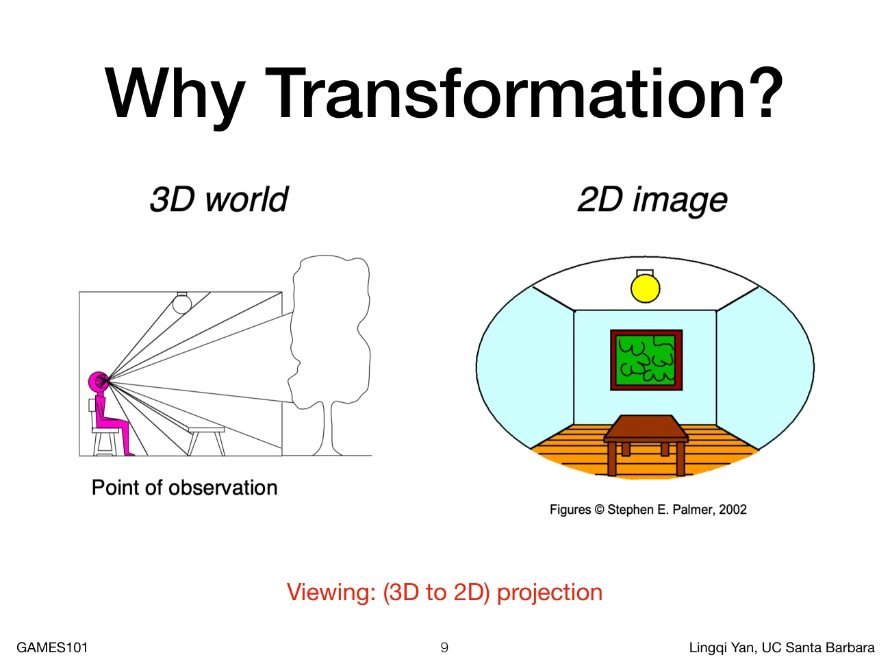
常见坑
把「变换」只理解成移动物体 → 忽略了视图变换、投影变换也是变换 → 学后续相机/投影时要重新建立框架。
UE / Unity 落地
UE/Unity 中每个 Actor/GameObject 都有 Transform 组件，包含位置、旋转、缩放，底层就是本讲要讲的仿射变换矩阵。
相机（Camera）的视图矩阵和投影矩阵也是变换矩阵，对应课件里的 Viewing。
022. 2D 线性变换：缩放、反射、切变、旋转
课件先介绍几种基本的 2D 变换，它们都可以写成 2×2 矩阵乘以向量 的形式：
\[ \begin{pmatrix} x' \\ y' \end{pmatrix} = \begin{pmatrix} a & b \\ c & d \end{pmatrix} \begin{pmatrix} x \\ y \end{pmatrix} \]
- 缩放（Scale）：\( x' = s_x x,\ y' = s_y y \)。矩阵为 \( \begin{pmatrix} s_x & 0 \\ 0 & s_y \end{pmatrix} \)。当 \( s_x \ne s_y \) 时是非均匀缩放（Non-Uniform），会改变物体比例。
- 反射（Reflection）：例如水平反射 \( x' = -x,\ y' = y \)，矩阵为 \( \begin{pmatrix} -1 & 0 \\ 0 & 1 \end{pmatrix} \)。
- 切变（Shear）：水平切变让 x 坐标随 y 线性偏移：\( x' = x + a y,\ y' = y \)，矩阵为 \( \begin{pmatrix} 1 & a \\ 0 & 1 \end{pmatrix} \)。课件提示：在 y=0 处水平位移为 0，在 y=1 处水平位移为 a，垂直方向不变。
- 旋转（Rotation）：默认绕原点逆时针旋转角度 \( \theta \)。矩阵为 \( \begin{pmatrix} \cos\theta & -\sin\theta \\ \sin\theta & \cos\theta \end{pmatrix} \)。
这些变换有一个共同点：原点保持不变（因为矩阵乘零向量还是零向量），所以它们叫线性变换。这也解释了为什么平移不能写成 2×2 矩阵——平移会把原点移走。
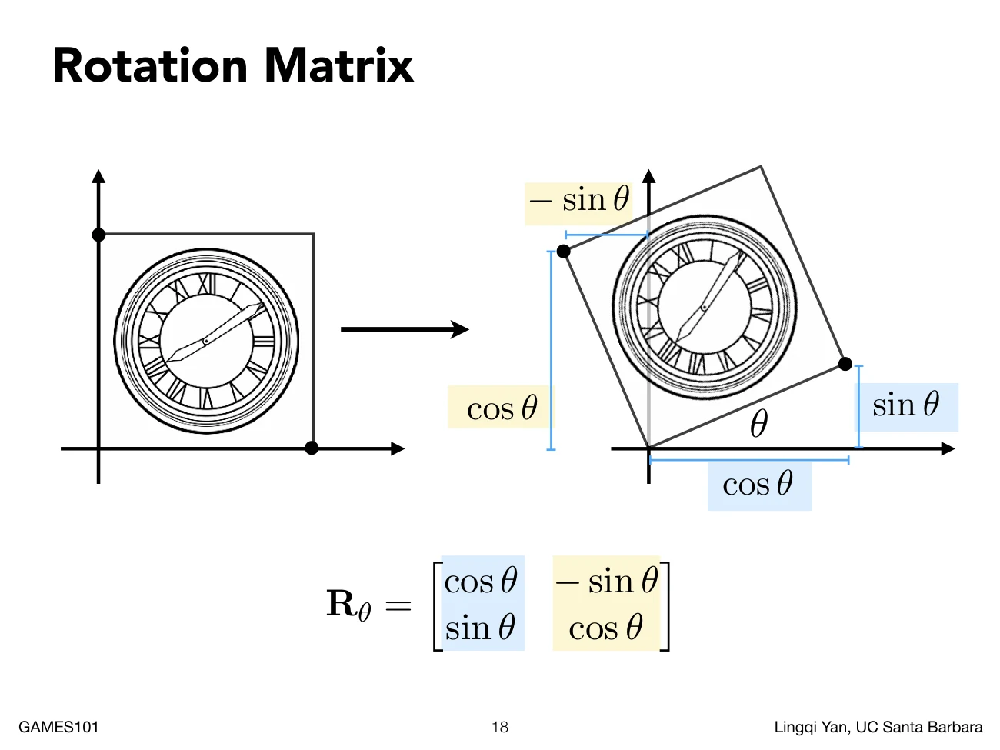
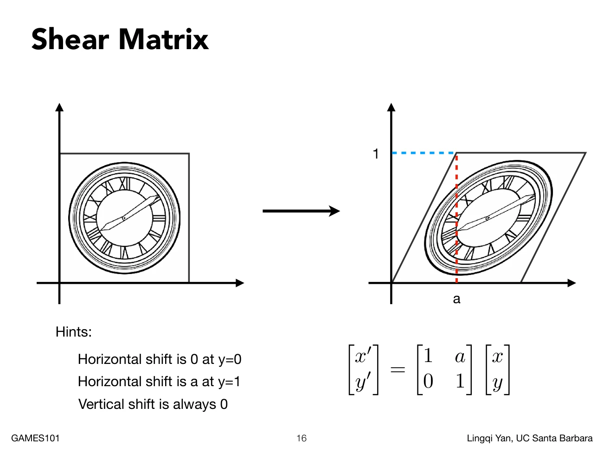
常见坑
旋转矩阵符号写反 → 旋转方向变成顺时针 → 记住标准形式：第一行 (cos, -sin)，第二行 (sin, cos)，逆时针为正。
缩放矩阵对角线顺序搞混 → 把 x 和 y 的缩放因子写反 → 检查 \( s_x \) 对应第一行第一列。
切变矩阵中 a 的位置写错 → 水平切变应放在第一行第二列（影响 x 随 y 变化）。
UE / Unity 落地
UE 中 Transform 的 Scale 是三维向量，对应非均匀缩放；Unity 的 Transform.localScale 同理。
Unity 中旋转用四元数表示，但底层仍会转成旋转矩阵参与计算。
033. 平移的困境与齐次坐标的引入
平移的公式很简单：\( x' = x + t_x,\ y' = y + t_y \)。但它无法写成 \( \begin{pmatrix} a & b \\ c & d \end{pmatrix} \begin{pmatrix} x \\ y \end{pmatrix} \) 的形式，因为矩阵乘法是线性的，而平移是仿射的（线性变换加平移）。课件明确指出：平移不是线性变换。
我们不希望平移成为特例（每次都要单独加一个向量），于是引入齐次坐标（Homogeneous Coordinates）：给 2D 坐标增加一个第三分量 \( w \)。
- 2D 点：\( (x, y, 1)^T \)
- 2D 向量：\( (x, y, 0)^T \)
这样平移就可以写成 3×3 矩阵乘法：
\[ \begin{pmatrix} x' \\ y' \\ 1 \end{pmatrix} = \begin{pmatrix} 1 & 0 & t_x \\ 0 & 1 & t_y \\ 0 & 0 & 1 \end{pmatrix} \begin{pmatrix} x \\ y \\ 1 \end{pmatrix} \]
为什么向量是 \( w=0 \)？因为向量表示「方向」，不应该被平移影响。用 \( w=0 \) 乘以上面的矩阵，平移项 \( t_x, t_y \) 会乘以 0，向量保持不变。这正好符合直觉：平移一个向量没有意义。
齐次坐标的代价是增加了一维，但换来的是所有仿射变换的统一表示，以及后续投影变换的便利。
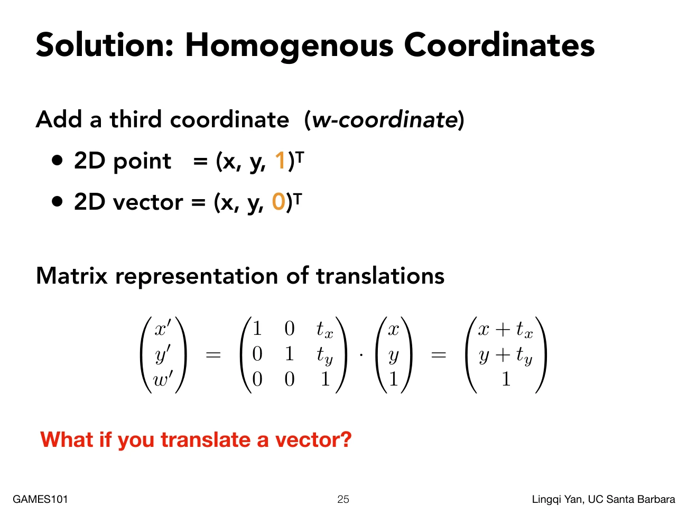
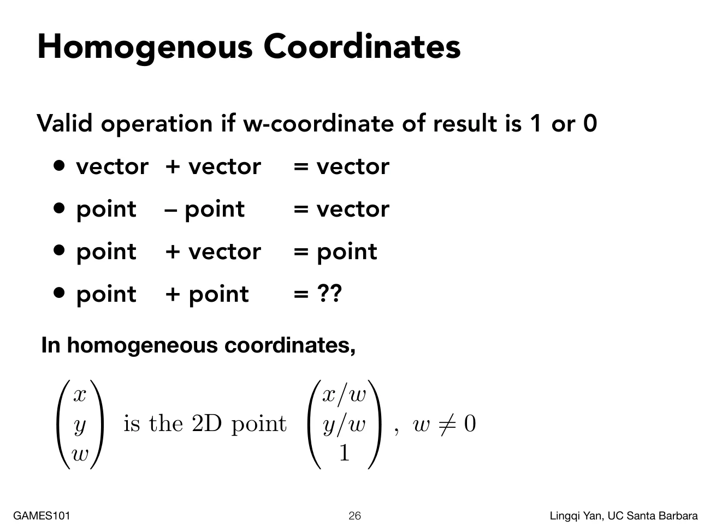
常见坑
把点写成 \( w=0 \) 或向量写成 \( w=1 \) → 平移会错误地作用于向量 → 记住：点 w=1，向量 w=0。
点+点得到 \( w=2 \) 后忘记除以 w → 坐标翻倍 → 齐次坐标中 \( (x,y,w) \) 表示点 \( (x/w, y/w) \)。
认为齐次坐标只是为了平移 → 它还能统一表示投影变换，后续课程会大量使用。
UE / Unity 落地
UE/Unity 的 Shader 中，顶点位置用 float4 表示，w 分量区分点与方向；矩阵乘法用 mul() 完成。
Unity 的 Matrix4x4 中平移分量位于第 4 列（列主序），与课件中 3×3 矩阵的第三列对应。
044. 仿射变换与齐次坐标下的统一形式
仿射变换（Affine Transformation） 定义为线性变换加平移：
\[ \begin{pmatrix} x' \\ y' \end{pmatrix} = \begin{pmatrix} a & b \\ c & d \end{pmatrix} \begin{pmatrix} x \\ y \end{pmatrix} + \begin{pmatrix} t_x \\ t_y \end{pmatrix} \]
用齐次坐标可以写成单个 3×3 矩阵：
\[ \begin{pmatrix} x' \\ y' \\ 1 \end{pmatrix} = \begin{pmatrix} a & b & t_x \\ c & d & t_y \\ 0 & 0 & 1 \end{pmatrix} \begin{pmatrix} x \\ y \\ 1 \end{pmatrix} \]
这个矩阵的前两列（或前两行，取决于写法）是线性部分，第三列是平移部分，最后一行固定为 \( (0,0,1) \)。
课件总结了 2D 变换的齐次坐标矩阵：
- 缩放：\( \begin{pmatrix} s_x & 0 & 0 \\ 0 & s_y & 0 \\ 0 & 0 & 1 \end{pmatrix} \)
- 旋转：\( \begin{pmatrix} \cos\alpha & -\sin\alpha & 0 \\ \sin\alpha & \cos\alpha & 0 \\ 0 & 0 & 1 \end{pmatrix} \)
- 平移：\( \begin{pmatrix} 1 & 0 & t_x \\ 0 & 1 & t_y \\ 0 & 0 & 1 \end{pmatrix} \)
注意：仿射变换保持直线和平行性，但不一定保持角度和长度。
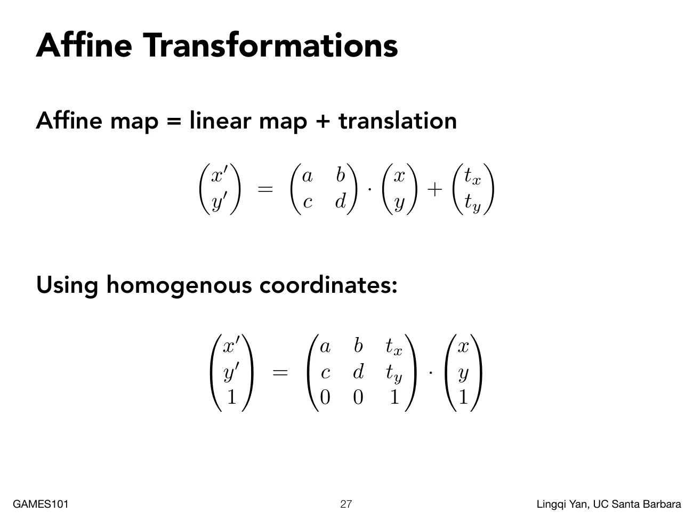
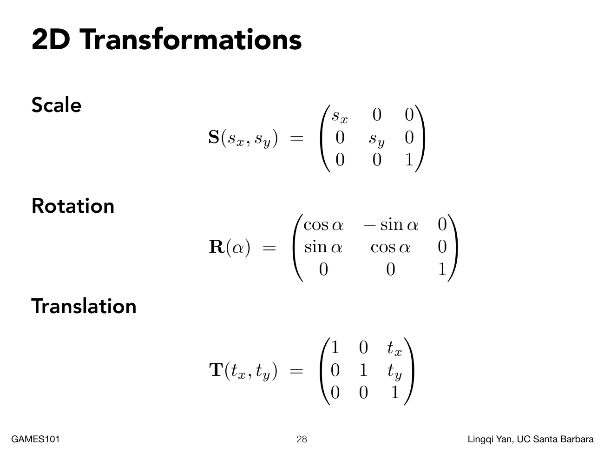
常见坑
把仿射矩阵的最后一行写成 \( (t_x, t_y, 1) \) → 最后一行必须是 \( (0,0,1) \)，否则不再是仿射变换。
混淆行向量与列向量写法 → 课件默认列向量，矩阵在左乘；如果使用行向量，矩阵要转置。
UE / Unity 落地
UE 的 FMatrix 是 4×4 齐次矩阵，平移在第四列；Unity 的 Matrix4x4 也是列主序，平移在最后一列。
055. 变换的组合与顺序
多个变换可以按顺序作用，例如先旋转再平移：\( x' = T \cdot R \cdot x \)。矩阵乘法满足结合律，所以可以先把所有变换矩阵乘成一个矩阵，再作用于顶点：
\[ A_n(\cdots A_2(A_1(x))) = (A_n \cdots A_2 A_1) x \]
这样做的好处是性能：每个顶点只需一次矩阵乘法，而不是 n 次。
但要注意：矩阵乘法不满足交换律。\( R \cdot T \ne T \cdot R \)。课件用「先平移再旋转」和「先旋转再平移」两张图直观展示了结果不同。
另外，矩阵从右向左作用于向量：\( T \cdot R \cdot x \) 表示先对 x 做 R，再做 T。
绕任意点 c 旋转是组合变换的典型例子：
- 把 c 平移到原点：\( T(-c) \)
- 绕原点旋转：\( R(\alpha) \)
- 平移回去：\( T(c) \)
总矩阵为 \( T(c) \cdot R(\alpha) \cdot T(-c) \)。
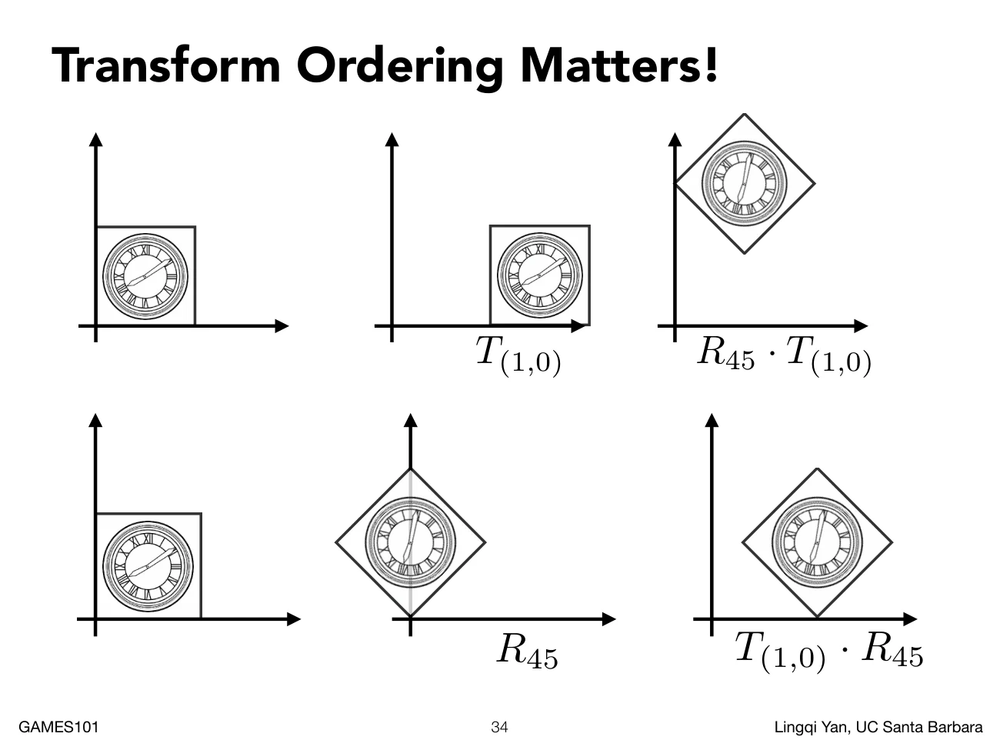
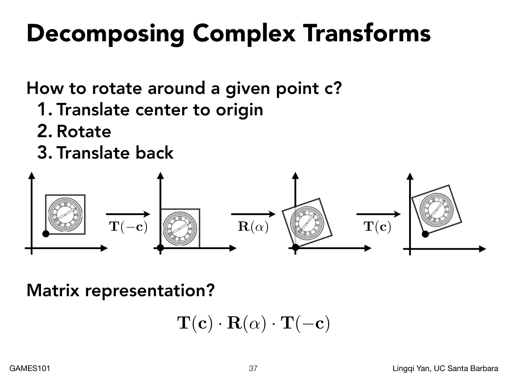
常见坑
认为矩阵乘法可交换 → 变换顺序写反导致物体位置错误 → 记住从右向左应用，并检查矩阵乘法顺序。
组合变换时忘记先乘成单个矩阵 → 每个顶点多次乘法，性能下降 → 预乘所有矩阵。
绕任意点旋转时平移方向写反 → 应该先 \( T(-c) \) 再 \( T(c) \)，注意符号。
UE / Unity 落地
UE/Unity 中物体的世界矩阵 = 父级世界矩阵 × 本地变换矩阵，顺序不能颠倒。
Unity 的 Transform.Translate 默认在本地空间还是世界空间取决于参数，本质是矩阵乘法顺序问题。
066. 逆变换与 3D 变换
逆变换（Inverse Transform） 把变换撤销：如果 \( M \) 把 x 变到 y，那么 \( M^{-1} \) 把 y 变回 x。几何上，逆变换就是反向操作（例如旋转 \( \theta \) 的逆是旋转 \( -\theta \)）。
3D 变换与 2D 完全类似，只是多一维：
- 3D 点：\( (x, y, z, 1)^T \)
- 3D 向量：\( (x, y, z, 0)^T \)
- 一般齐次坐标 \( (x, y, z, w) \) 表示点 \( (x/w, y/w, z/w) \)，当 \( w \ne 0 \)。
3D 仿射变换用 4×4 矩阵表示：
\[ \begin{pmatrix} x' \\ y' \\ z' \\ 1 \end{pmatrix} = \begin{pmatrix} a & b & c & t_x \\ d & e & f & t_y \\ g & h & i & t_z \\ 0 & 0 & 0 & 1 \end{pmatrix} \begin{pmatrix} x \\ y \\ z \\ 1 \end{pmatrix} \]
左上角 3×3 是线性变换部分，最后一列是平移。课件提问：线性变换先还是平移先？答案是矩阵形式中平移在最后（最右列），但作用于向量时，线性部分先乘，再加平移。
3D 旋转比 2D 复杂，因为可以绕任意轴旋转，后续课程会讲。
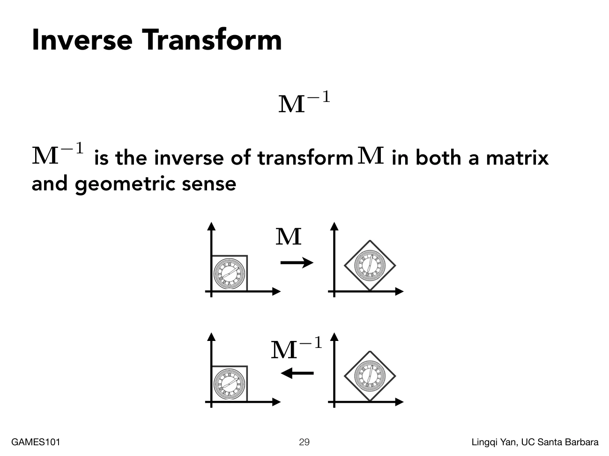
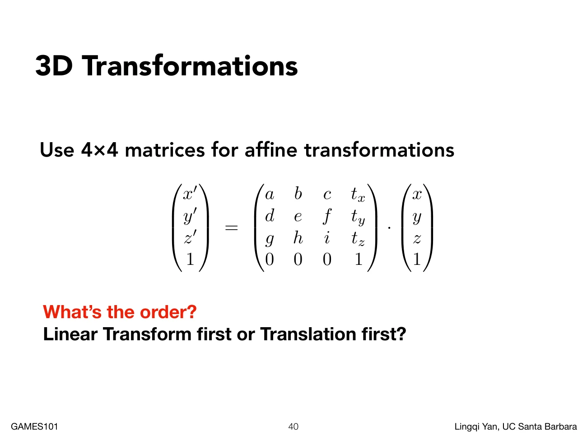
常见坑
3D 点与向量的 w 分量搞混 → 点 w=1，向量 w=0，与 2D 一致。
认为 3D 旋转矩阵可以直接把 2D 旋转套到某个轴上而不检查符号 → 绕不同轴旋转的矩阵符号不同，需查表。
逆变换只考虑矩阵逆而忽略几何意义 → 对于旋转，逆矩阵就是转置，但平移的逆是负平移。
UE / Unity 落地
UE/Unity 中 3D 变换用 4×4 矩阵；Unity 的 Matrix4x4.TRS 可直接构造平移-旋转-缩放矩阵。
UE 的 FTransform 包含平移、旋转（四元数）、缩放，可转成 FMatrix。
引擎对照表
| 概念 / 效果 | Unreal Engine | Unity |
|---|---|---|
2D/3D 变换矩阵 | FMatrix（4×4），FTransform 可转 FMatrix | Matrix4x4，Transform.localToWorldMatrix |
平移 | FMatrix 第四列；Actor 的 Location | Matrix4x4 最后一列；Transform.position |
旋转 | FQuat 四元数，可转矩阵；Actor 的 Rotation | Quaternion，Transform.rotation |
缩放 | FVector Scale；Actor 的 Scale | Vector3，Transform.localScale |
齐次坐标 | Shader 中 float4 位置，w 分量区分点/向量 | Shader 中 float4，w 分量区分点/向量 |
组合变换 | WorldMatrix = ParentWorld × LocalTransform | localToWorldMatrix = parent.localToWorldMatrix × localMatrix |
术语双语表
| English | 中文 | 说明 |
|---|---|---|
| Transformation | 变换 | 对物体位置、朝向、大小或观察方式的数学操作。 |
| Affine Transformation | 仿射变换 | 线性变换加平移，保持直线和平行性。 |
| Homogeneous Coordinates | 齐次坐标 | 增加 w 分量，使平移可写成矩阵乘法。 |
| Scale | 缩放 | 沿坐标轴按比例放大或缩小。 |
| Rotation | 旋转 | 绕原点（或指定点）转动一定角度。 |
| Shear | 切变 | 一个坐标随另一个坐标线性偏移。 |
| Reflection | 反射 | 关于某条轴或平面的镜像。 |
| Composite Transform | 组合变换 | 多个变换矩阵相乘得到一个总矩阵。 |
| Inverse Transform | 逆变换 | 撤销变换的矩阵，几何上是反向操作。 |
课后练习
01 写出绕原点逆时针旋转 90° 的 2D 齐次坐标矩阵，并计算点 (1,0) 变换后的坐标。
查看答案
提示：
使用旋转矩阵标准形式，代入 θ=90°。
旋转矩阵：\( \begin{pmatrix} \cos90^\circ & -\sin90^\circ & 0 \\ \sin90^\circ & \cos90^\circ & 0 \\ 0 & 0 & 1 \end{pmatrix} = \begin{pmatrix} 0 & -1 & 0 \\ 1 & 0 & 0 \\ 0 & 0 & 1 \end{pmatrix} \)。点 (1,0,1) 变换后为 (0,1,1)，即 (0,1)。
02 解释为什么平移不能用 2×2 矩阵表示，而齐次坐标可以。
查看答案
提示：
从线性变换保持原点不变的角度思考。
2×2 矩阵乘法是线性变换，必然把原点 (0,0) 映射到 (0,0)。平移会把原点移到 (t_x, t_y)，所以不是线性变换。齐次坐标增加 w 分量后，平移矩阵的第三列携带平移量，而点的 w=1 使得平移量被加上，从而用 3×3 矩阵乘法实现平移。
03 给定变换序列：先绕原点旋转 45°，再平移到 (2,3)。写出总变换矩阵，并说明矩阵乘法顺序。
查看答案
提示：
矩阵从右向左作用，先旋转后平移。
总矩阵 \( M = T(2,3) \cdot R(45^\circ) \)，即 \( \begin{pmatrix} 1 & 0 & 2 \\ 0 & 1 & 3 \\ 0 & 0 & 1 \end{pmatrix} \begin{pmatrix} \cos45^\circ & -\sin45^\circ & 0 \\ \sin45^\circ & \cos45^\circ & 0 \\ 0 & 0 & 1 \end{pmatrix} \)。作用于点时先旋转再平移。
04 如何绕点 (2,2) 逆时针旋转 30°？写出矩阵表达式。
查看答案
提示：
平移到原点、旋转、平移回去。
\( T(2,2) \cdot R(30^\circ) \cdot T(-2,-2) \)。即先把点 (2,2) 移到原点，旋转 30°，再移回。
05 在 Unity 中，一个物体的 localToWorldMatrix 是如何由父级和本地变换得到的？如果先平移后旋转与先旋转后平移，结果有何不同？
查看答案
提示：
考虑矩阵乘法顺序和从右向左作用。
localToWorldMatrix = parent.localToWorldMatrix × localMatrix。先平移后旋转：\( R \cdot T \)；先旋转后平移：\( T \cdot R \)。两者结果不同，因为矩阵乘法不交换。例如先平移 (1,0) 再旋转 90° 得到 (0,1) 附近，而先旋转再平移得到 (1,0) 旋转后加平移。